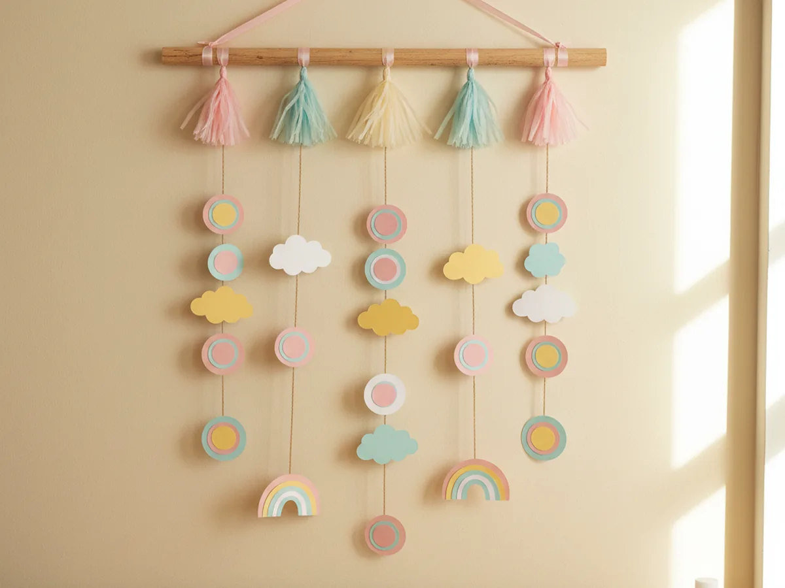
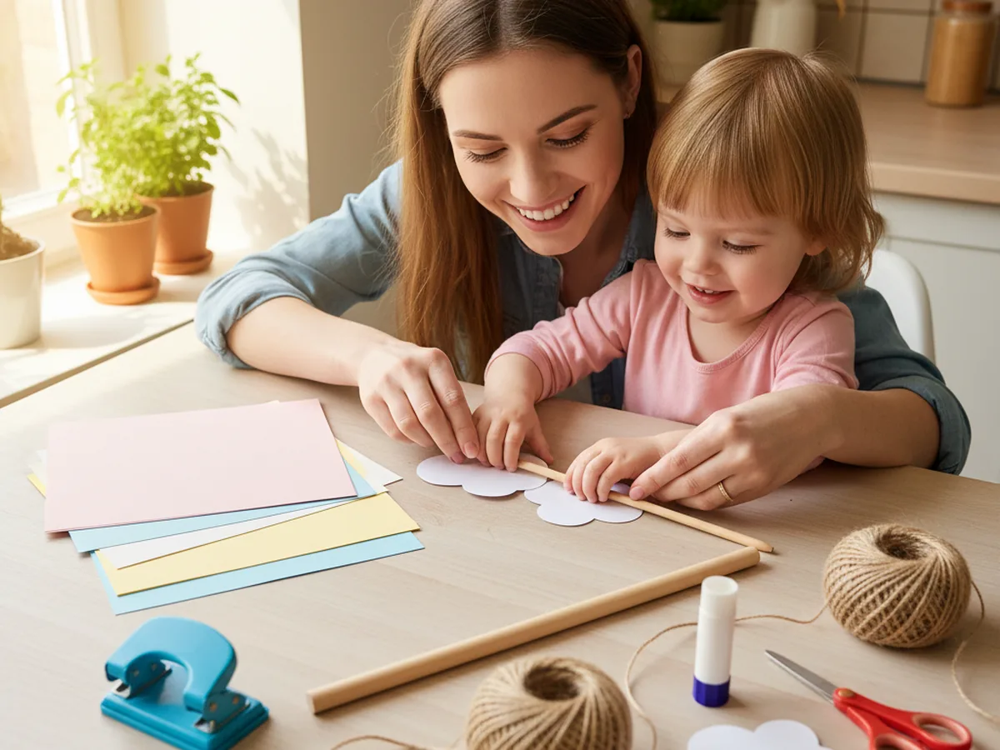
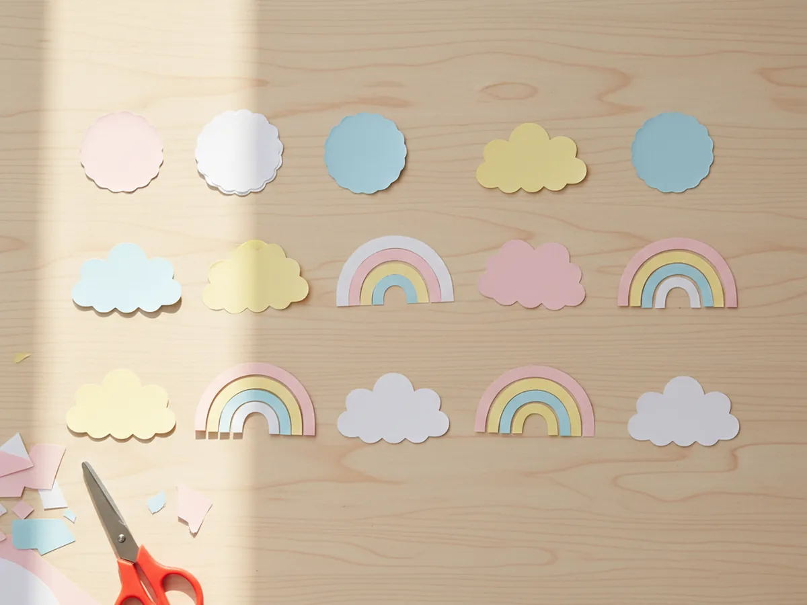
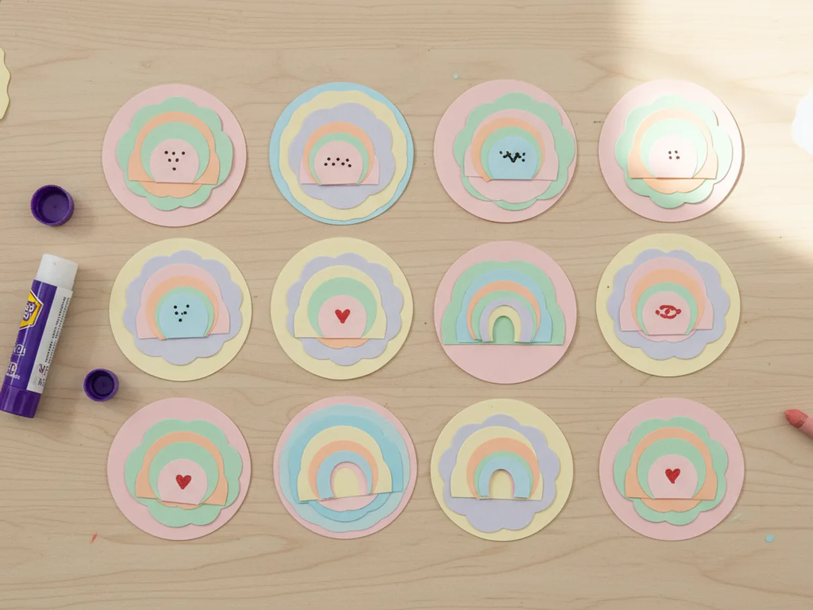
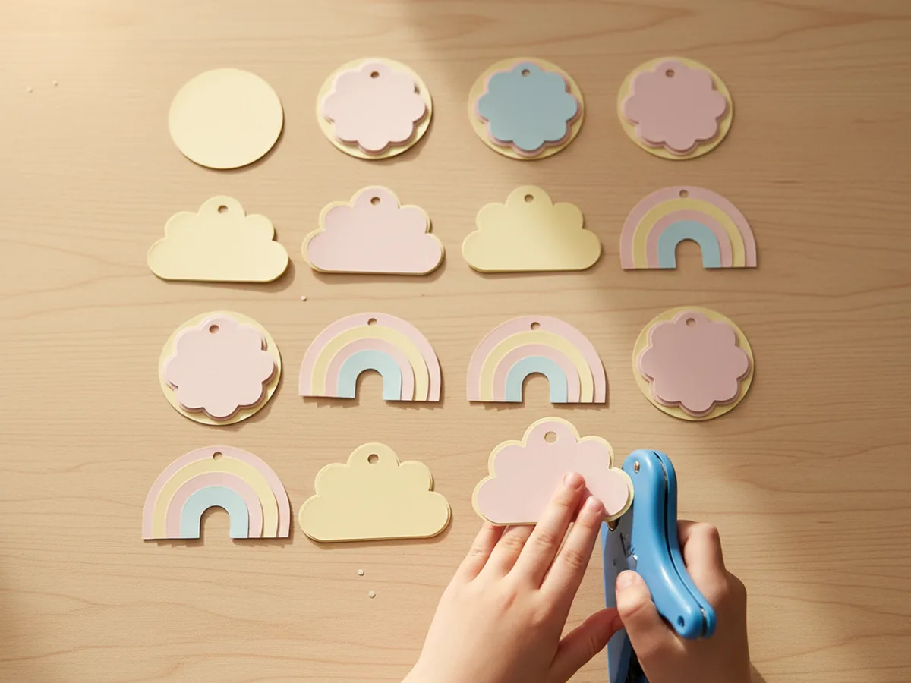
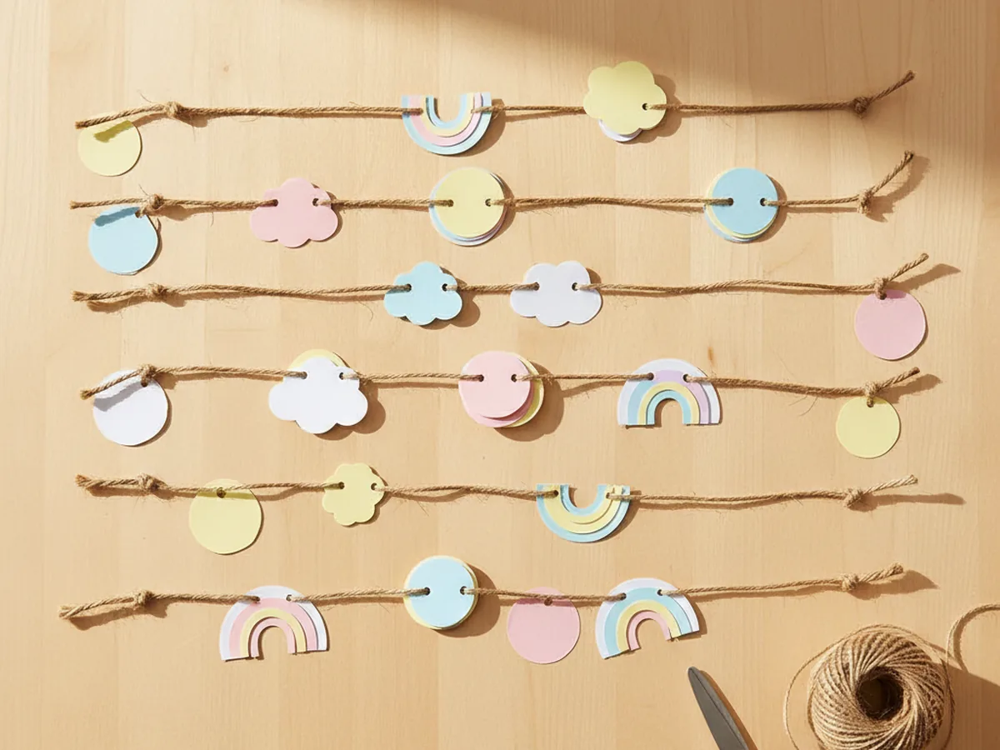
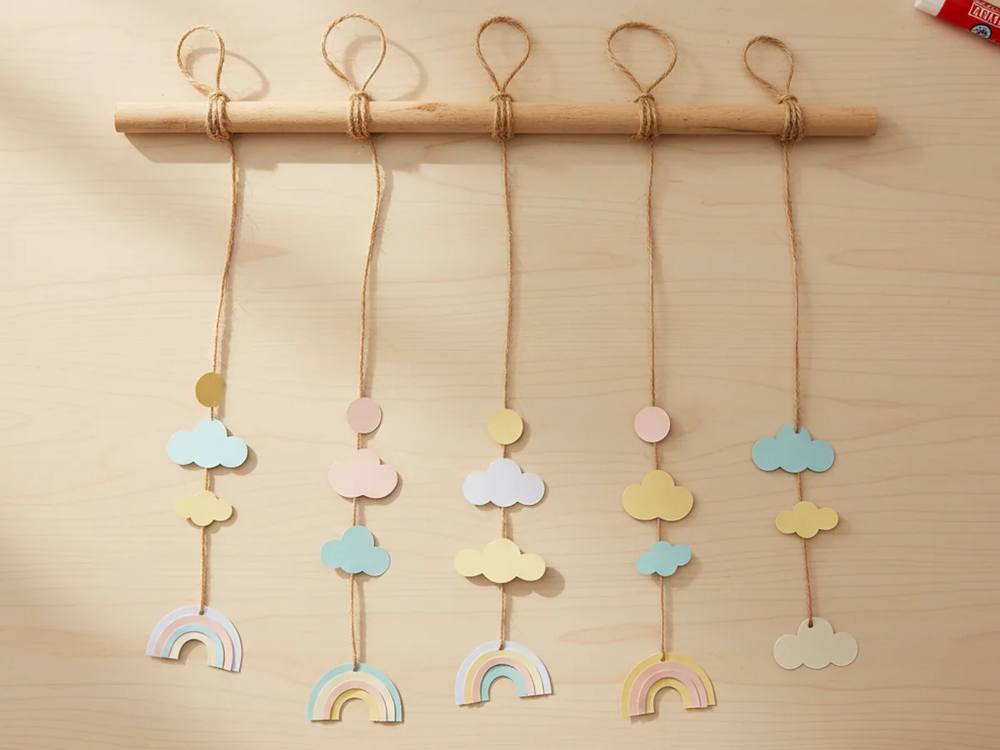
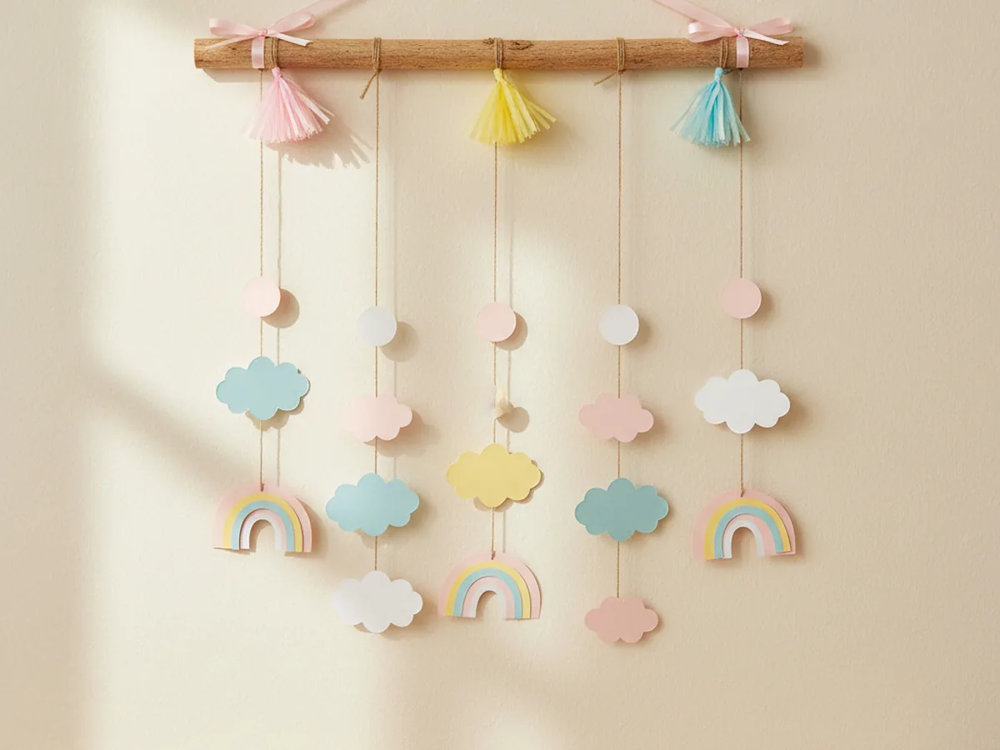

If you have ever scrolled through a sweet nursery photo and thought your child's room could use a little softness too, this craft paper wall hanging is going to make you smile. With one wooden dowel, a handful of bright cardstock scraps, and about 45 minutes at the kitchen table, you and your child can build a real handmade hanging that looks pretty enough to display above a crib, a reading nook, or a play corner. 💛
Every shape is cut, layered, and threaded by little hands, so the project flows at a relaxed pace with no special skills required. Your finished paper wall hanging will feel like a tiny piece of art that your child can proudly point to every time they walk into their room.
Why Kids Love This Craft
There is something extra exciting about a craft that ends up on the wall. Most projects get tucked into a folder or tossed in a memory bin after a few days, but a paper wall hanging craft earns a real spot in the house. Watching their cardstock shapes turn into a hanging decoration gives a child a quiet, proud sense of grown-up creativity.
The steps themselves also pack in real skill-building moments. Cutting the shapes supports fine motor practice, lining up two paper layers builds early symmetry awareness, and threading shapes onto twine works on hand-eye coordination. Because each piece is small and gentle to handle, even a four-year-old can take the lead on most of the steps.
And then there is the magical hanging moment. Lifting the finished handmade paper wall hanging onto a nail or a removable hook turns the whole project into a tiny ceremony. The pride in their face when they see their own art swinging softly against the wall lasts long after the craft table is cleared away. 🌈

What You'll Need
Here is everything you need to make this craft paper wall hanging together at home. Lay each supply out on the table before you sit down so the project moves smoothly and nobody has to hop up mid-step.
- Astrobrights Bright Cardstock Assortment (250 Sheets), sturdy 65 lb cardstock in cheerful colors that hold their shape on a hanging strand.
- Crayola Construction Paper (240 Sheets, 12 Colors), softer paper for layering and for cutting pastel cloud and rainbow shapes.
- Wooden Dowel Rods, 1/4 x 12 Inch (25 Pack), smooth unfinished dowels that are the perfect width for tying twine strands.
- Natural Jute Twine for Crafts (6 Roll Value Pack), soft natural twine that knots easily and adds a warm boho touch.
- Single Hole Punch, 1/4 Inch, a kid-friendly handheld punch with a soft grip for making clean threading holes.
- Elmer's All Purpose School Glue Sticks (30 Count), clean and washable, great for layering paper shapes without any wet mess.
- Fiskars 5 Inch Blunt-Tip Kids Scissors, safe blunt blades that still cut cardstock cleanly for tiny hands.
- LaRibbons 3/8 Inch Satin Ribbon (10 Rolls), soft rainbow ribbon for the hanging loop and a pretty finishing touch.
- Simetufy Colored Tissue Paper (150 Sheets, 30 Colors), soft tissue in pretty pastel shades for making little tassels.
- Crayola Broad Line Markers (10 Classic Colors), for adding tiny dots, stars, or little smiley details on the paper shapes.
- A pencil, for tracing simple shape outlines before cutting.
Step-by-Step Instructions
This craft paper wall hanging is genuinely forgiving and beginner-friendly, so go at your child's pace, let them help with every shape, and have fun arranging the strands together.
Step 1: Cut Cute Paper Shapes
Start by cutting around fifteen simple shapes from your brightest cardstock and softer construction paper. The easiest mix is small circles, scalloped clouds, and tiny rainbow arches, but feel free to swap in hearts, stars, or little raindrops. Aim for shapes about two to three inches wide so they read clearly from across the room. Repeat in pink, yellow, blue, and white so the finished paper wall hanging has a soft, cheerful palette.
Let your child pick which shapes to cut from which color. Wobbly edges are part of the charm, so resist the urge to tidy them up.

Step 2: Layer the Shapes for Depth
Take any two shapes that look pretty together, ideally one slightly bigger and in a contrasting color. Run a small dab of glue stick in the center of the larger shape, then press the smaller shape on top so a thin ring of the bottom color shows around the edge. Repeat for every piece in your paper wall hanging craft. The little color frames make each shape feel intentional, like it belongs in a real piece of nursery art.
For an extra detail your child will love, add a few simple marker dots, tiny hearts, or sweet smiley faces in the center of some shapes. Two seconds, all the charm.

Step 3: Punch a Hole at the Top of Each Shape
Grab the single hole punch and gently squeeze out a small hole at the top center of every layered piece. Stay about a quarter inch from the edge so the paper holds firmly when the shape hangs from twine. Younger kids may need a little hand-over-hand help on the punch, but they will love hearing the satisfying click each time it cuts.
Once all the holes are punched, line the shapes up on the table in roughly the order you want them to appear from top to bottom on each strand. Seeing them grouped this way makes the next step much faster.

Step 4: Thread Shapes onto Jute Twine
Cut five lengths of jute twine, each about eighteen inches long. Tie a small knot near the bottom of every strand so the first shape has something to rest against. Then help your child thread three or four paper shapes onto each piece of twine, sliding them so they hang at slightly staggered heights for that natural waterfall look. A small knot between shapes helps each piece sit exactly where you want it.
Mix the colors and shapes as you go so no two strands feel identical. This is where the personality of your handmade paper wall hanging really starts to show.

Step 5: Tie the Strands to the Wooden Dowel
Lay the wooden dowel flat on the table. Starting about an inch in from one end, tie the top of the first twine strand around the dowel with two simple double knots. Move along the dowel and tie the next strand about an inch and a half away. Repeat until all five strands are evenly spaced. Step back and check that each strand hangs straight down and the paper shapes form a soft, even curtain.
This is the moment the whole project starts looking like real wall decor. Pause and let your little one hold it up to admire their work.

Step 6: Add a Ribbon Loop and Tassel Finish
Cut a piece of satin ribbon about twenty inches long. Tie one end firmly to the very left tip of the dowel and the other end to the very right tip so the ribbon forms a soft hanging loop above the dowel. While you have the tissue paper out, make three quick mini tassels by folding small rectangles of tissue, fringing the bottom edges with scissors, and rolling each one tightly around a piece of twine. Tie the tassels along the ribbon at the two ends and the center for a sweet finishing touch. Hand the finished paper craft to your child and watch them light up. ✨
Hang the completed craft paper wall hanging on a small nail or removable wall hook in their bedroom, nursery, or playroom. Soft strands of pastel paper swaying against the wall feels like instant magic.

Variations to Try
Rainbow Cloud Theme: Skip the mixed shapes and use only soft white scalloped clouds with three rainbow arches per strand. The result feels calmer and works beautifully above a crib or in a baby nursery.
Seasonal Wall Hanging: Swap the shapes for the time of year. Try paper pumpkins and acorns for fall, hearts for Valentine's Day, snowflakes for winter, or little Easter eggs for spring. The same base craft turns into a whole year of cute seasonal decor.
Toddler-Friendly Single Strand: For younger crafters, skip the dowel and just hang one long twine strand with three or four big paper shapes. It is just as proud of a moment, and tiny hands manage the bigger pieces more easily.
Final Thoughts
This craft paper wall hanging is one of those projects that looks like it took a real artist, but actually comes together with simple shapes, glue dabs, and easy knots. The finished hanging earns a real place in your home, and the proud face on your little one every time they spot it on the wall is the very best part.
If your child loved making this paper wall hanging, save the tutorial on Pinterest so you can come back to it for the next room refresh or seasonal change. Happy crafting, friend.
More Crafts You'll Love
If your little one enjoyed making this paper wall hanging, they will love these other sweet paper decor projects next: